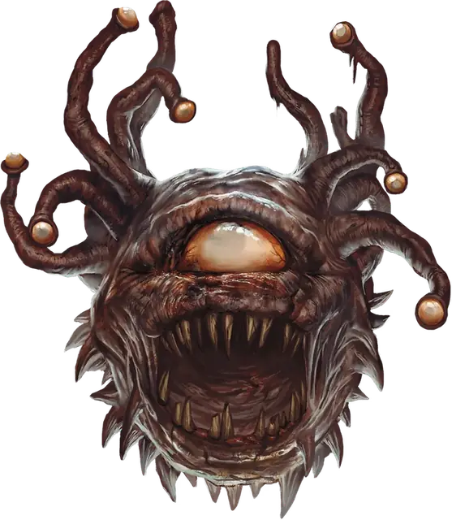

Бехолдер-зомби
Beholder Zombie
Большая Нежить, Нейтральная Злая

Класс Защиты 15 Инициатива −1 (9)
Хиты 93 (11к10 + 33)
Скорость 5 футов, Полёта 20 футов (парит)
| мод | спас | ||
|---|---|---|---|
| СИЛ | 14 | +2 | +2 |
| ЛОВ | 8 | −1 | −1 |
| ТЕЛ | 16 | +3 | +3 |
| мод | спас | ||
|---|---|---|---|
| ИНТ | 3 | −4 | −4 |
| МДР | 8 | −1 | +2 |
| ХАР | 5 | −3 | −3 |
Иммунитеты Яд; Истощение, Опрокинутый, Отравленный
Чувства Тёмное зрение 60 футов, пассивное Восприятие 9
Языки Понимает Глубинную речь и Подземный язык, но не говорит
Опасность 5 (1 800 опыта; БВ +3)
Особенности
Стойкость нежити. Если урон опускает Хиты бехолдера зомби до 0, и это не урон Излучением или от Критического попадания, то бехолдер совершает спасбросок Телосложения со Сл 5 + полученный урон. При успехе Хиты бехолдера-зомби опускаются до 1, а не до 0.
Действия
Мультиатака. Бехолдер-зомби дважды использует Лучи из глаз.
Укус. Бросок рукопашной атаки: +5, досягаемость 5 фт. Попадание: 16 (4к6 + 2) Колющего урона.
Лучи из глаз. Бехолдер-зомби выстреливает случайным лучом в видимую им в пределах 120 футов от него цель (бросьте 1к4; перебросьте, если зомби уже использовал выпавший луч в этом ходу):
1. Луч паралича. Спасбросок Телосложения: Сл 14. Провал: Цель получает состояние Парализованный и повторяет спасбросок в конце каждого своего хода, при успехе оканчивая на себе этот эффект. Через 1 минуту она автоматически преуспеет в этом спасброске.
2. Луч страха. Спасбросок Мудрости: Сл 14. Провал: 13 (3к8) Психического урона, и цель получает состояние Испуганный до конца своего следующего хода.
3. Луч бессилия. Спасбросок Телосложения: Сл 14. Провал: 10 (3к6) Некротического урона, и цель получает состояние Отравленный до конца своего следующего хода. Цель не может восстанавливать Хиты, пока имеет это состояние.
4. Луч расщепления. Спасбросок Ловкости: Сл 14. Провал: 27 (5к10) Силового урона. Если цель — немагический предмет или творение магической силы, 10-футовый Куб этой цели распадается в пыль. Успех: Только половина урона. Провал или успех: Если цель — существо, и этот урон опустил Хиты цели до 0, она распадается в пыль.
Бонус мастерства +3
Среда обитания Город, Подземье, Царство теней
Сокровища Отсутствуют
Зомби
Неутомимые ожившие трупы
Зомби — это бездумные ожившие трупы, как правило, жутко изуродованные разложением и смертельными ранами. Они служат сверхъестественным силам, которые вдохнули в них жизнь, таким как злые некроманты или духи исчадий. Зомби неутомимы, безжалостны и живучи, а их мёртвая плоть может перенести даже самые тяжёлые ранения. Они способны выполнять простые приказы, но движет ими не разум, а первобытный инстинкт. Мертвецы готовы беспрекословно выполнять любой приказ, работать без устали и пробиваться с боем сквозь строй врагов, однако их легко останавливает препятствие или непредвиденное обстоятельство.
Обычно зомби создаются из трупов Гуманоидов, но останки других существ также могут стать живыми мертвецами. Такие чудовищные зомби наследуют силу, которая была у них при жизни, или часть своих сверхъестественных способностей, но используют их в лучшем случае беспорядочно.
Бехолдеры-зомби сохраняют часть магических способностей своих чудовищных глазных стебельков. С помощью магии эти парящие тела уничтожают препятствия и обездвиживают врагов, а затем вгрызаются в них своими гниющими челюстями.
Обычно сами бехолдеры используют магию, чтобы создавать подобные отродья из трупов побеждённых соперников.